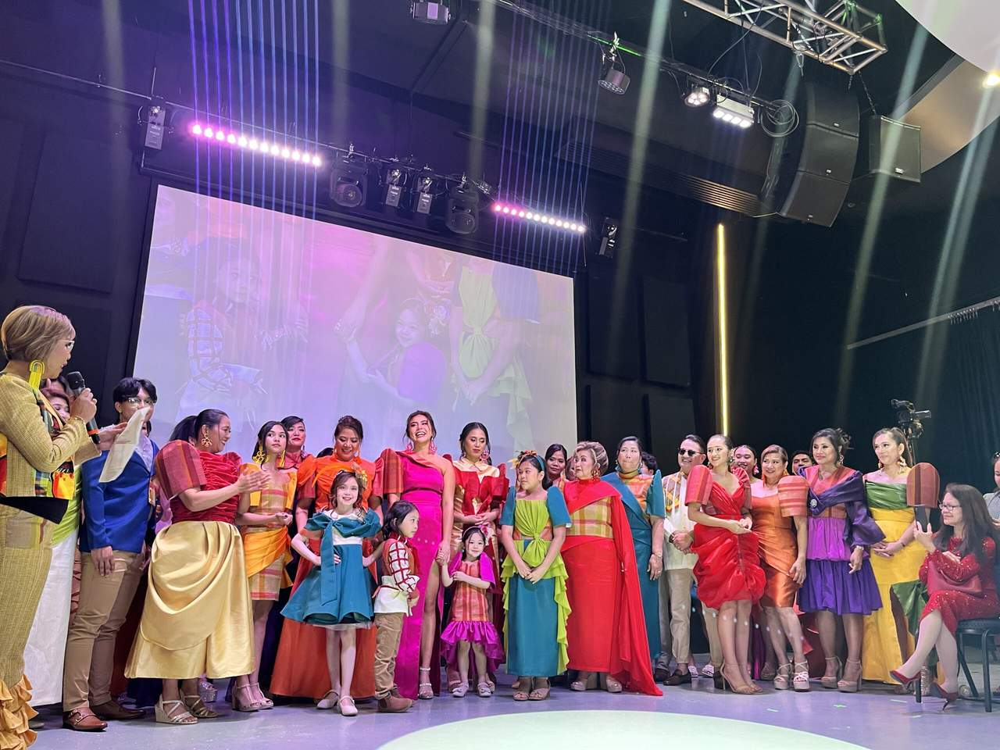
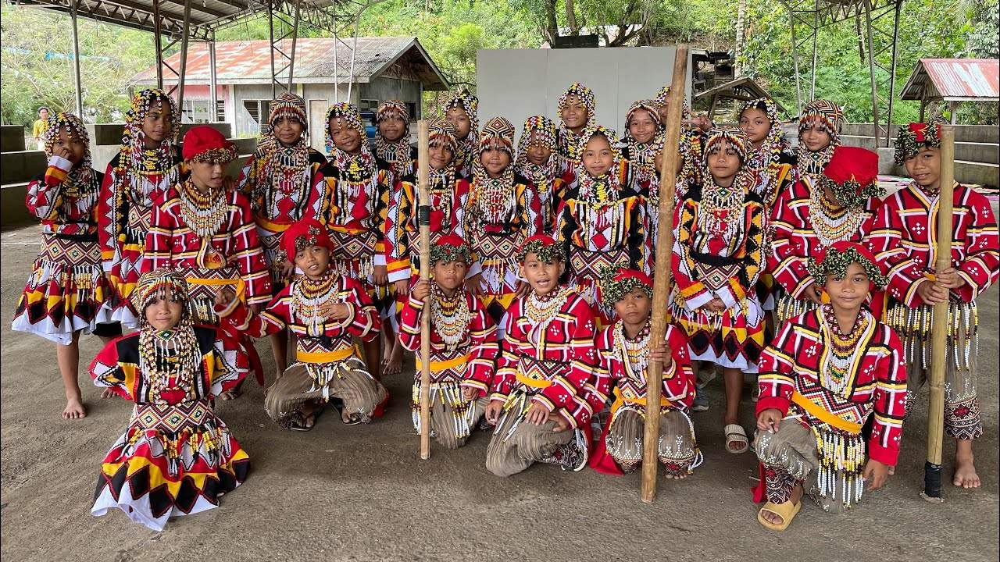
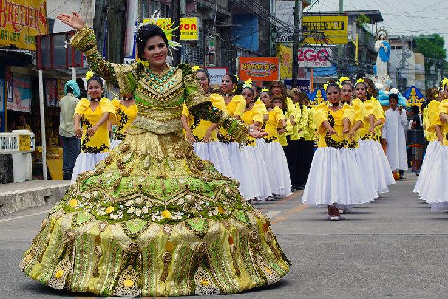
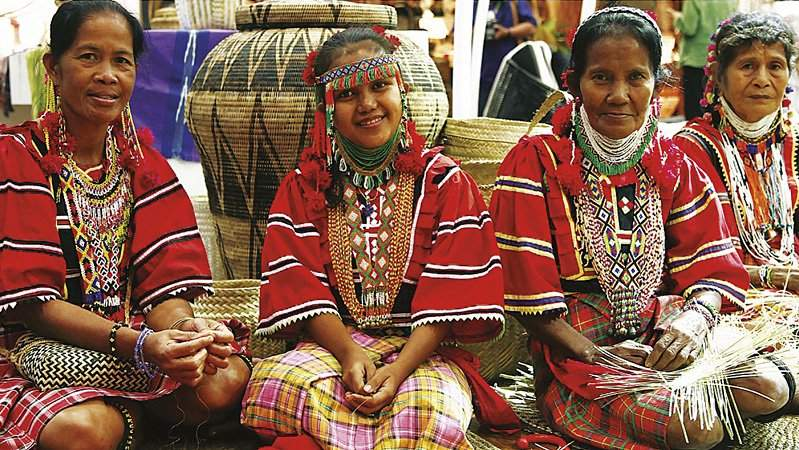
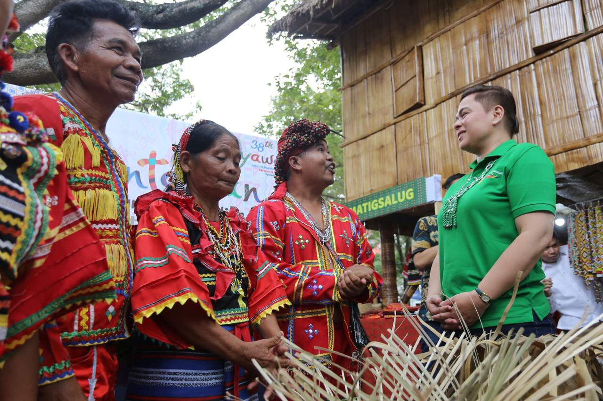
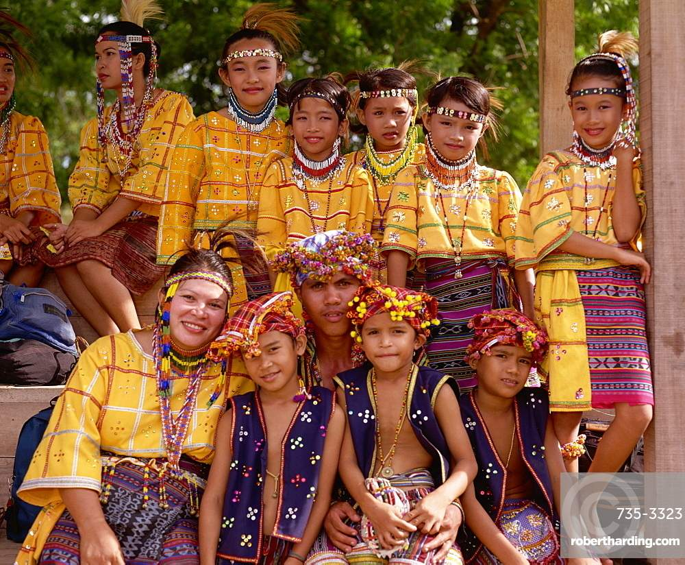
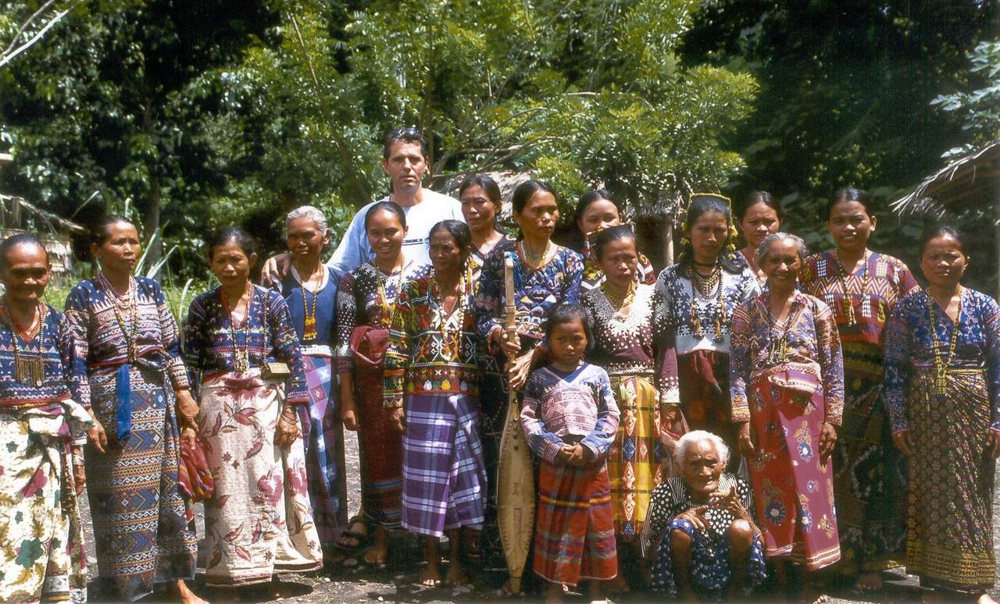

Our Festivals
From indigenous tribal celebrations to harvest thanksgiving — every festival tells a story

Banana Festival (Panabo City)
As the Banana Capital of the Philippines, Panabo City celebrates its agricultural heritage through the annual Banana Festival in May. The event features a grand parade with banana-themed floats, street performances, agri-trade fairs, and cooking competitions using banana as the star ingredient. Farmers and industry stakeholders gather to showcase innovations in banana cultivation and processing, making it both a cultural and economic event.

Musa Festival
Named after the banana genus Musa, this festival honors Panabo's status as the "Banana Capital of the Philippines." It showcases banana-themed floats, cultural performances, trade fairs, and agri-tourism activities. The festival draws visitors from across Mindanao and features the grand street parade as its highlight.

Sikwate Festival
Celebrating Kapalong's rich cacao heritage, the Sikwate Festival features chocolate-making demonstrations, cultural shows, and Manobo tribal performances. "Sikwate" is the traditional Filipino hot chocolate drink made from cacao tablea. The festival promotes the municipality's thriving cacao industry and indigenous cultural heritage.

Pangapog Festival
"Pangapog" means thanksgiving in the local dialect. This festival celebrates Carmen's founding anniversary and agricultural bounty through vibrant street dances, floral floats, harvest displays, and competitions honoring farming communities. The event reflects the deep connection between the people of Carmen and their land.

Manobo Tribal Festival
A grand cultural celebration showcasing the rich traditions, rituals, music, and weaving arts of the Manobo indigenous people. It features traditional dances, indigenous games, and a colorful display of tribal regalia and crafts. The festival is recognized as one of the most authentic indigenous cultural events in Mindanao.
Indigenous Cultural Communities
The original stewards of Davao del Norte's lands and traditions

Mandaya
Known for their intricate malong weaving and the panaog ritual dance. Primarily found in eastern Davao del Norte.

Matigsalug
Highlanders of the Bukidnon-Davao border, known for their beadwork, traditional music, and rice cultivation rituals.

Bagobo
Master craftspeople known for ornate jewelry, colorful costumes, and the ancient practice of bronze casting.

Kalagan
Sea-dwelling peoples of the Samal and coastal areas, known for their traditional boat building and fishing traditions.